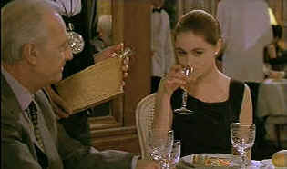

|
Nelly and Monsieur Arnaud/
B+, B+ |
|
New Yorker/1995/103/ANA
1.66 |
Monsieur Arnaud is captivated by Nelly's astounding
beauty at a casual cafe introduction. Arnaud, in his mid-sixties and Nelly
close to thirty are both people in need. Arnaud, separated 20 years
from his wife, is a former provincial judge and later a very successful
businessman. Nelly has just decided to separate from her husband of five
years.
Arnaud is searching for passion, Nelly is
searching for herself. A fascinating relationship develops unlike anything
you’ve really ever watched in the movies. Nelly and Monsieur Arnaud
is by nature a talky film. Much of the plot evolves around Arnaud's
autobiography as he dictates passages to Nelly. For all its verbosity, so
much plays in between the lines. Nelly and Monsieur Arnaud is
textured with reality. It's easy to become involved with these characters.
You don’t want the film to end.
|
 |
| A wine
older than Nelly. ©New Yorker |
Emmanuel Béart is a striking beauty. Ever since
appearing in Manon of the Spring, she has been acknowledged as one of
the great international beauties. Béart is a fine actress, with a hint of
mystery about her. All eyes focus on Nelly as captured by Béart. Michael
Serrault’s precision in the role of Arnaud is wonderful. There's
intelligence behind every glance. Arnaud's disdainful self awareness
is finely sculpted by Serrault. And this is the same man who created the
hilarious role of Albin the transvestite in La Cage aux Folles twenty
years before.
Directed and co-written by the late Claude Sautet
(1924-2000), a senior Frenchman whose command over quiet domestic
dramas Béart , Un Coeur en Hiver. Sautet directs with domestic
patience, calmly nudges his characters forward.
The production elements disappear behind the professional
treatment. Interiors are well lit capturing and embellishing mood. First
rate all the way.
DVD presentation is pretty straight forward. The
anamorphic 16 x 9 enhanced images are sharp throughout. No detail is lost.
Colors are stable and consistent. There's a nice film-like sense about the
transfer. Blacks are creamy smooth and contrast is effortless. Dolby Digital
2-chnnel stereo is clean and the removable yellow English subtitles are
provided to translate the French language.
|
|
|
|

The Movie Poster Archive
includes extensive poster images from the films of stars like Susan Hayward,
Kirk Douglas, Katharine Hepburn and many more. Our featured star is
Lana
Turner.

Selections from the
Feature Archive include articles on
Akira Kurosawa,
Blonde
Bimbos,
Frank
Darabont,
Steven Culp,
John Herzfeld or
Vietnam:
The Hollywood Pariah, and many more....
Director
Walks the Wire
Balanced by an armor of movie lore and filmmaking daring, director John
Herzfeld is comfortable walking the high wire. Check out this interview by
Stu Kobak.

 Kinoeye Archive Kinoeye Archive
This is a resource of all content-rich materials on the web relating to
Central and East European cinema. The ultimate aim of the Kinoeye Archive is
to provide a near-as-damn-it definitive index of intelligent and thoughtful
English-language analysis of Central and Eastern European cinema on the web.
DVDRAMA
One of France's outstanding DVD resources. Par le vous DVD?
 Sight
and Sound Magazine is the venerable voice of The British Film Institute. The
site includes articles and film reviews. A great resource in print and on
the Internet. Sight
and Sound Magazine is the venerable voice of The British Film Institute. The
site includes articles and film reviews. A great resource in print and on
the Internet.

A new entry in the 2001 home theater site sweepstakes. Chief focus on
hardware reviews with a smattering of software.

Spartacus
(SE) /A, B+

This is one of the great epic films with an animally electric performance
from Kirk Douglas. Great special editon.
|